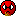

THIS PAGE IS CONSTANTLY

UPDATES!!!!!!
 Created an animated 88x33 button for other sites to link to :D! See the buttons on the nav bar!
Created an animated 88x33 button for other sites to link to :D! See the buttons on the nav bar!- PAGE COUNTER IS UP! Now you know which visitor number you are. If you are the 1 millionth, you get a free hug!
- Stop button added because this is actually annoying to hear every time I refresh while coding. 
- The autoPlay midi is added! Just wait a few seconds after the page has loaded!
- The Blog has been
updated with the final look-and-feel.
- MOAR BANNERS! Each time the page is refreshed, the banner is selected at random from a pool of about 20.
- The advertisements at the bottom of the page are randomly swapped out every 30 seconds.
- New blog post! This thing needs updating tho. Will get around to that eventually.
- If you try and find a page that doesn't exist, there is a neat little page built for it. Try it!
YOU ARE VISITOR NUMBER